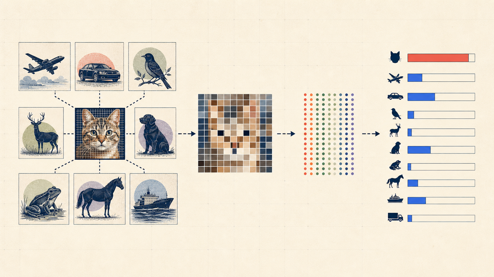

flowchart LR A[1 · DATA<br/>experience] --> B[2 · HYPOTHESIS<br/>possible rules] B --> C[3 · LOSS<br/>what wrong costs] C --> D[4 · OPTIMIZATION<br/>search] D --> E[5 · EVALUATION<br/>evidence] E -. better questions .-> A classDef first fill:#2878c8,color:#fff,stroke:#2878c8 classDef middle fill:#fffdf7,color:#17212b,stroke:#657079 classDef last fill:#ef5b45,color:#fff,stroke:#ef5b45 class A first class B,C,D middle class E last
What Does It Mean to Learn?
Image classification and the five ingredients of machine learning
What does it mean to learn?
CHAPTER 01 · FOUNDATIONS
Image classification and the five ingredients of machine learning
We will build one complete learning problem—not memorize a list of definitions.

A computer begins somewhere else

one image \(248\times400\times3=297{,}600\) numbers in \([0,255]\)
The model receives numbers—not objects, meaning, or common sense.
Illustration: CS231n, Image Classification notes.
The task in one line
image \(x\) → classifier \(f_\theta\) → label \(\hat y\)
\[ f_\theta:\mathbb R^{H\times W\times3}\longrightarrow\mathbb R^K, \qquad \hat y=\arg\max_j f_\theta(x)_j \]
cat0.82
dog0.10
fox0.05
car0.03
\(p(y\mid x)\in\mathbb R^K\) and \(\sum_{k=1}^{K}p(y=k\mid x)=1\)
Why rules collapse

The label stays fixed while viewpoint, scale, shape, visibility, light, and background all change.
Illustration: CS231n, Image Classification notes.
Machine learning changes what we write
HANDWRITTEN PROGRAM
We write the final rule
pixels + rules about color, edges, shape → class
LEARNING SYSTEM
We write a procedure for finding a rule
labeled images + learning algorithm → classifier
The difficult design work does not disappear. It moves.
Today’s map
Part I · 15 min task · Part II · 25 min data & hypotheses · Part III · 25 min losses · Part IV · 20 min evaluation
01 · Data
A dataset is a collection of promises
\[ \mathcal D=\{(x^{(i)},y^{(i)})\}_{i=1}^{n} \]

\(x^{(i)}\)one image
\(y^{(i)}\)its class label
\(\mathcal D\)a sample of future reality
The last promise is the easiest to break.
Example: CIFAR-10 batch from CS231n.
Which model did we train?
BLUE WATER
Every ship
GRAY ROAD
Every car
Object classifier—or background classifier?
A shortcut can be predictive in the dataset and useless after deployment.
Four questions before training
01
Who or what produced the images?
02
Who decided the labels?
03
Which classes or conditions are missing?
04
Will tomorrow look like today?
Classical ML chooses the representation

RGB image→Canny edge map→SVM / linear classifier→class scores
The human decides which visual properties the classifier gets to see.
Pipeline generated for this course; algorithm: Canny (1986), OpenCV reference.
Deep learning learns the representation

The feature extractor and classifier are optimized together, end-to-end. We will learn how every block works later in the course.
Architecture: Simonyan & Zisserman, VGG (2014). Diagram created for this course.
02 · Hypothesis
A hypothesis class is a menu of rules
MEMORY
\(k\)-nearest neighbors
Look for similar training images.

TEMPLATES
Linear classifier
Score pixels with \(Wx+b\).

FEATURES
Neural network
Compose learned nonlinear layers.

Choosing the class decides what can possibly be learned.
Illustrations: CS231n · nearest neighbors, linear classifiers, and neural-network case study.
Nearest neighbor: learning without parameters
?
query image
find the closest →
cat\(d=4.2\)
dog\(d=5.7\)
ship\(d=9.1\)
\[ d(x,x_i)=\lVert x-x_i\rVert_2 \]
One-pixel translation: same object, very different raw-pixel distance.
Linear classification: one score per class
\[ s=Wx+b \]
\[ W\in\mathbb R^{K\times D}, \quad x\in\mathbb R^D, \quad s\in\mathbb R^K \]
image\(x\in\mathbb R^{3072}\) × templates\(W\in\mathbb R^{10\times3072}\) + bias\(b\in\mathbb R^{10}\)
Row \(W_j\) is a learned pixel template for class \(j\).
Watch the scores vote
cat3.2
dog5.1
ship−1.7
Correct label: cat · prediction: dog
How wrong is this prediction?
Same architecture, different rule
Two students train the same linear-classifier code and obtain different matrices \(W\).
Different hypothesis classes?
Different hypotheses?
Same hypothesis class. Different learned members of that class.
04 · Optimization
Loss tells us where; optimization moves us

LOSS
Defines which predictions are preferable.
\[J(\theta)\]
OPTIMIZER
Chooses how parameters change.
\[-\eta\nabla_\theta J\]
We postpone the machinery—not the distinction—to the optimization chapter.